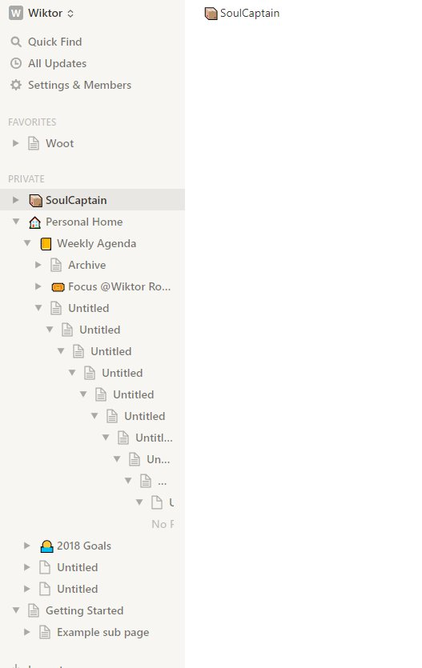
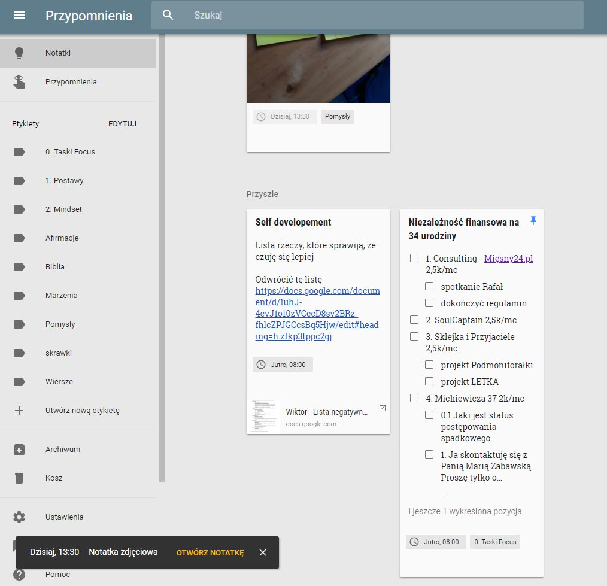
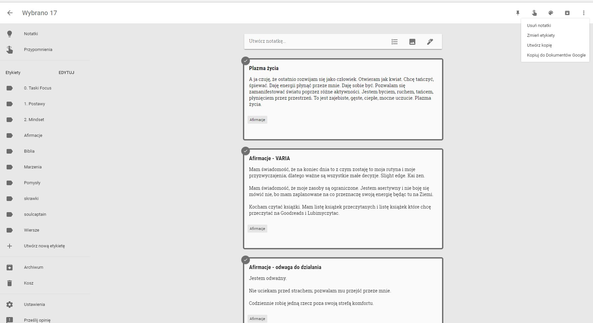
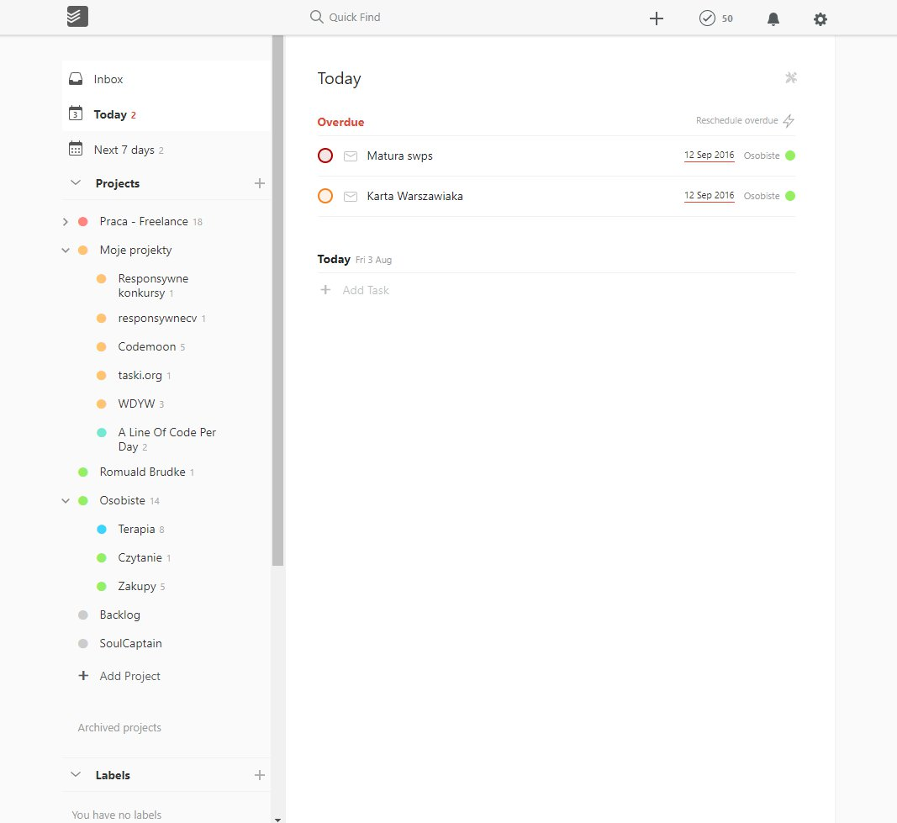
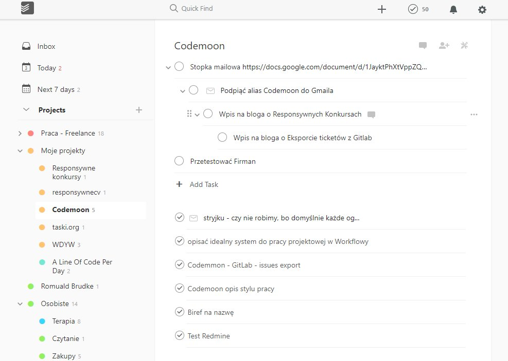

Móc robić w lewym menu dowolną ilość zagłębień 
Markdown support
Podczas pisania na żywo można używać tagów markdown
Potrafi wyeksportować dowolny deck do
Markdown
HTML
Ficzery które chcemy z
Umie z bulletów zrobić tabelę
Nagłówki to nazwy bulletów na 1 poziomie
Karta może mieć dodatkowe właściwości jak
Assaignee
Due date
Umie soulencje z dzisiejszą datą wyświetlić w widoku "Focus"
Soulencje
Każda liniia w dokumencie to Soulencja
Mogą być komentowane
Moga być przesuwane góra dół w ramach kart (drag and drop jak w OneNote)
Mogą być wcinane tabem
Mogą być tagowane
Mogą należeć do wielu kart jednocześnie (jako linki)
Mogą być forkowane/klonowane
Mogą być embedowane poprzez @ - trzeba podać ich ID lub zacząć wpisywać ich treść, wtedy dana soulencja będzie wyświatlana jako "Iframe"
:: po lewej mają opcję
Soulencja może być opakowana w kartę
Każda soulencja w danym widoku (karcie/dokumencie) ma swój numer
Karty
Kartę tworzymy wcinając 1 poziom soulencję pod drugą
Wtedy soulencja wyżej automatycznie staje się tytułem tej karty
Deck
Widok siatki kart
Widok dokumentu
Tagi
Znaczniki służące do robienia prostych kwerend Last Friday
Jeśli wejdę sobie na jakiś tag, np. #Afirmacje, to w ramach niego mogę sobie drag and drop poustawiać kolejność elementów w ramach tagów
Umie wyfiltrować tagi jak #afirmacje, #cytaty
Umie wyfiltorwać wszystkie soulencje z datą jak Last Friday Tuesday 3pm Last Saturday tak ładnie jak Google Keep

Można sobie elegancko wyeksporotować dany tag lub kwerendę do markdown/HTML lub po prostu opublikować kwerendę jako oddzielną stronę

Ma super skróty klawiszowe
https://www.notion.so/Keyboard-and-markdown-shortcuts-66e28cec810548c3a4061513126766b0
Drag and drop bulletów zagnieżdżonych soulcencji tak jak w notion.so
Drag and drop soulencji ze zdjęciami tak jak w notion.so ←pokazuje gdzie dropnie ładnym niebieskim podreśleniem soulencji w treści dokumentu
Widok decku fullscreen/focus to de facto jak Power Point.
Możesz sobie do czachy wybijać słówka
Możesz w ten sposób prezentować innym dokument
Wyszukiwanie pełnotekstowe
Do poziomy pojedynczej soulencji
Kwerendy
np.
Skrzynka wrzutowa zgodna z GTD
Jeśli dodaję na szybko jakąś notatkę, to trafia ona do difoltowego folderu/skrzynki wrzytowej, gdzie potem można sobie taką notatkę przeciągnąć do odpowiedniego folderu projektowego
tak jak w todoist

Link do decku w decku umie zamienić w tekst
czyli przenieść soulencje z decka do dekca
Pokazuj/nie pokazuj ukończone taski
pokaż inline ukończone (onenote, notion.so)
pokaż podspodem (google keep, todoist)

task dla @Wiktor Roktiw
Wersjonowanie
Wersjonowanie np. Gitem
Żeby było łatwiej to na początek wersjonowanie samych soulencji
Możliwość powrotu do poprzedniej wersji
Możliwość narysowania "drzewa życia" Soulencji: kto kiedy i gdzie sforkował lub zrobił symlink
Import i export
Markdown